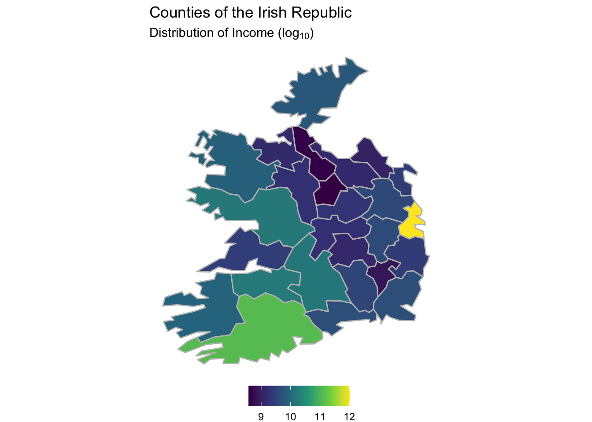

3.2 Importing vector data with sf
First, let’s load the library sf. Read chapter PLACEHOLDER If you haven’t installed it yet.
@todo replace placeholder
library(sf)
## Linking to GEOS 3.8.1, GDAL 3.1.4, PROJ 6.3.1As mentioned, sf is a great packge to facilitate handling vector data in R. “sf” stands for simple features, which is an open standard developed by the Open Geospatial Consortium (OGC). You will recognize many of these feature types from your everyday GIS-experience (see figure)
@todo add figure reference
@todo added reference with bibtex

To import a vector dataset into R, we can use the function read_sf as in the example below.
@todo how does the user get access to this dataset?
@body make this available through the packgage?
ARE_waedenswil <- read_sf("sample_data/Entsorgung_Waedenswil/ARE_waedenswil.shp")
ARE_waedenswil
## Simple feature collection with 13 features and 5 fields
## geometry type: MULTIPOLYGON
## dimension: XY
## bbox: xmin: 2689594 ymin: 1228563 xmax: 2694829 ymax: 1234095
## projected CRS: CH1903+ / LV95
## [90m# A tibble: 13 x 6[39m
## ID KLASSE KLASSE_DE KLASSE_FR KLASSE_NUM geometry
## [3m[90m<int>[39m[23m [3m[90m<chr>[39m[23m [3m[90m<chr>[39m[23m [3m[90m<chr>[39m[23m [3m[90m<dbl>[39m[23m [3m[90m<MULTIPOLYGON [m]>[39m[23m
## [90m 1[39m 69 D D - gering… D - faible… 4 (((2692378 1233048, 2692373 …
## [90m 2[39m [4m1[24m371 D D - gering… D - faible… 4 (((2689720 1232195, 2689767 …
## [90m 3[39m [4m3[24m578 D D - gering… D - faible… 4 (((2692766 1232135, 2692690 …
## [90m 4[39m [4m3[24m591 D D - gering… D - faible… 4 (((2691861 1232707, 2691907 …
## [90m 5[39m [4m3[24m696 A A - sehr g… A - très b… 1 (((2693943 1231286, 2693834 …
## [90m 6[39m [4m3[24m901 B B - gute E… B - bonne … 2 (((2693183 1231097, 2693113 …
## [90m 7[39m [4m4[24m137 B B - gute E… B - bonne … 2 (((2690970 1232339, 2690947 …
## [90m 8[39m [4m4[24m161 B B - gute E… B - bonne … 2 (((2691724 1232478, 2691701 …
## [90m 9[39m [4m4[24m225 B B - gute E… B - bonne … 2 (((2692266 1232198, 2692243 …
## [90m10[39m [4m4[24m401 C C - mittel… C - desser… 3 (((2694681 1230763, 2694659 …
## [90m11[39m [4m5[24m208 C C - mittel… C - desser… 3 (((2693064 1229206, 2693041 …
## [90m12[39m [4m5[24m319 C C - mittel… C - desser… 3 (((2690879 1233702, 2690856 …
## [90m13[39m [4m5[24m514 C C - mittel… C - desser… 3 (((2693168 1229907, 2693145 …Much of the beauty in sf comes from it’s simplicity: As you see from importing the shapefile, it is very much like a data.frame, a structure that you are probabbly know very well. In fact, it is a data.frame, as you can see here:
is.data.frame(ARE_waedenswil)
## [1] TRUEsf provides methods for various generics, e.g. you can use plot() on the object for a simple visualisation.
plot(ARE_waedenswil)